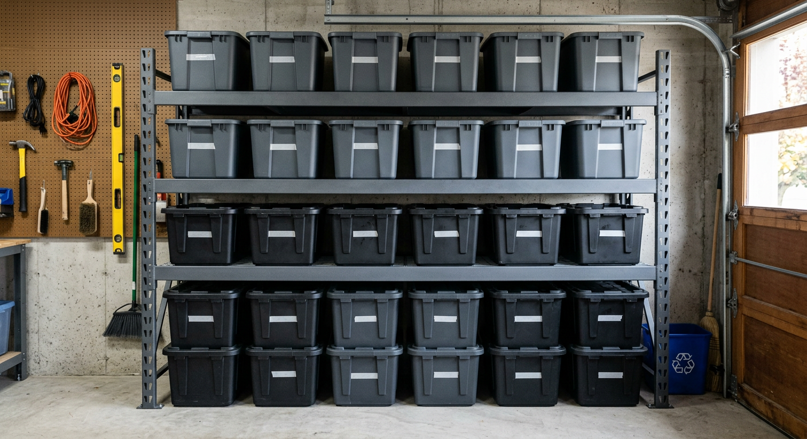

Industrial Steel Rack
Best when you store power tools, car fluids, and heavy totes. Look for higher per-shelf ratings and reinforced uprights.

Updated for 2026
Disclosure: As an Amazon Associate, we may earn from qualifying purchases.
| Use case | Best fit | Typical capacity target | Link |
|---|---|---|---|
| Heavy tools & auto gear | Heavy-duty steel rack | 1,500-2,000+ lb total | Check on Amazon |
| Tight one-car garage | Wall-mounted shelf | 16-24 in depth | Check on Amazon |
| Lowest-cost starter setup | Budget boltless rack | Adjustable shelves + anti-tip kit | Check on Amazon |
Fastest path: pick your garage type in the table, open one matching option, and compare only capacity + footprint before buying.
| Your main constraint | Best shelf path | Why this converts better | Action |
|---|---|---|---|
| Need max load confidence | 2,000+ lb steel shelf shortlist | Filters to high-capacity options first, reducing spec-comparison time | Open heavy-duty shortlist |
| Parking and walkway clearance is tight | Wall-mounted shelf shortlist | Keeps floor open while still adding usable storage volume | Open wall-shelf shortlist |
| Need a low-cost first setup | Budget boltless rack shortlist | Lets buyers launch with one rack and expand later without overcommitting | Open budget shortlist |
Execution tip: open one shortlist only, compare three options max, and buy the highest-rated match for your constraint to avoid analysis paralysis.
Best when you store power tools, car fluids, and heavy totes. Look for higher per-shelf ratings and reinforced uprights.
Ideal for one-car garages where floor space matters most. Keeps gear off the ground and parking lanes clearer.
Good first setup for seasonal bins and light-to-medium loads. Prioritize adjustable shelves and anti-tip hardware.
| If you need... | Recommended shelf type | Target spec |
|---|---|---|
| Maximum load capacity | Steel freestanding rack | 1,500-2,000+ lb total capacity |
| Cleaner floor and easier parking | Wall-mounted shelf | 16-24 in depth with studs/anchors |
| Low-cost starter setup | Budget boltless rack | Adjustable shelves + anti-tip hardware |
Pro tip: Measure your parking clearance before buying. In tight garages, a shallower shelf can outperform a larger unit because it keeps walkways usable.
Shortcut: if you're storing tools or auto gear, start with heavy-duty steel options first and filter by higher per-shelf load ratings.
For mixed household storage, 1,500 to 2,000+ lb total rack capacity is a practical baseline. Heavier tool or auto-part loads should use steel shelving with stronger per-shelf ratings.
Freestanding racks are best for bulky bins and flexible layouts, while wall-mounted shelves are better when preserving floor space is the priority.
Depths around 18 to 24 inches are usually easiest to live with. Deeper racks hold more but can make parking and walkway clearance tighter.
Wire shelves improve airflow and dust visibility, while solid shelves keep small parts from tipping and are easier for mixed household items. For most families, solid shelves are more versatile and easier to maintain.
Also see garage storage bins and workbench vs wall storage comparisons.
This guide is based on product-positioning research, common shopper needs, and side-by-side feature comparisons designed to help real households choose practical garage storage options faster.